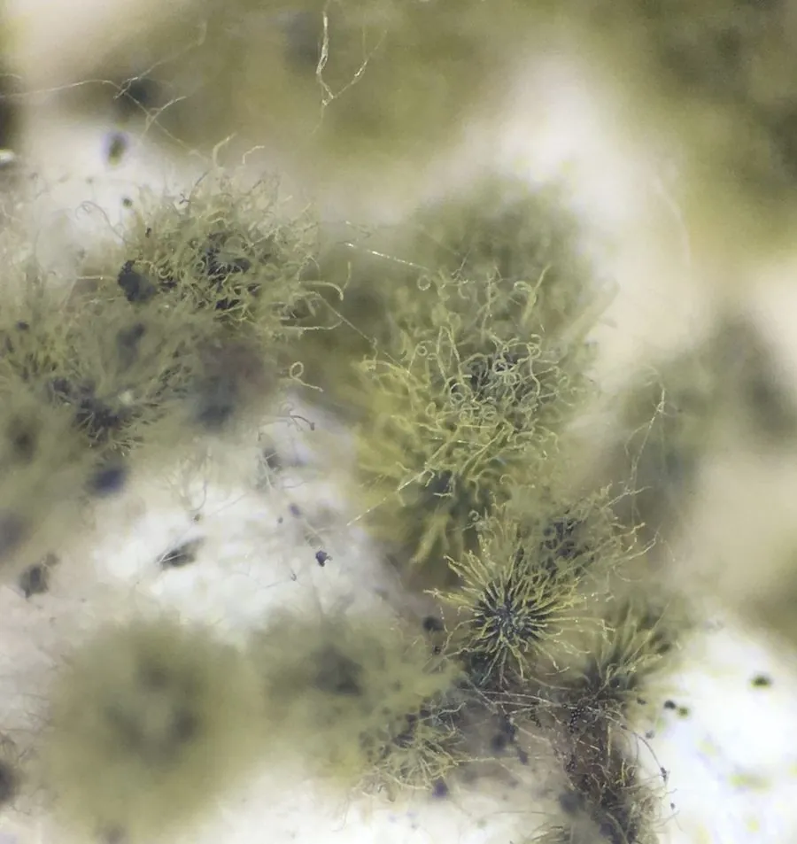

真菌 · 真菌界
球毛壳菌 Chaetomium globosum

球毛壳菌的子囊壳球形、表面密生褐色卷毛，是常见的纤维素分解菌和室内霉菌，也会产生毛壳菌素等毒素。
- 分类
- 门子囊菌门纲粪壳菌纲目粪壳菌目科毛壳菌科属毛壳菌属
- 栖息环境
- 土壤、植物残体、种子、纸张与潮湿的室内环境
- 地理分布
- 世界性分布，土壤、粮食与室内环境中常见
- 保护级别
- 暂无评估（IUCN 未评估，常见霉菌）
物种志
球毛壳菌是子囊菌门毛壳菌科的真菌，最显著的特征是它的子囊壳：球形至卵形，深褐色，表面密生褐色、弯曲的附属丝（俗称“毛”），因此得名“毛壳菌”。子囊壳内生子囊，子囊孢子柠檬形，褐色，一端有尖突。菌丝灰白色至橄榄褐色，在培养基上生长较快。
球毛壳菌广泛分布于土壤、植物残体、种子、纸张和潮湿的室内环境中，是强力的纤维素分解菌，能加速秸秆、纸和木材的腐烂。它在室内潮湿的墙面、天花板和纸张上生长，会产生霉味，部分菌株可产生毛壳菌素等毒素，长期暴露可能影响健康。另一方面，球毛壳菌能抑制多种植物病原菌，被研究用于生物防治；在农业上，它还可用于秸秆还田和有机肥腐熟。
形态与习性
- 子囊壳球形，深褐色，密生弯曲附属丝
- 子囊孢子柠檬形，褐色，一端有尖突
- 菌丝灰白色至橄榄褐色
- 分解能力强纤维素分解菌
- 危害室内霉菌，部分菌株产毛壳菌素
- 应用生物防治与秸秆腐熟研究
- 生境土壤、残体、纸张与潮湿室内
趣味知识
- 球毛壳菌的子囊壳上长满褐色的卷毛，“毛壳”之名由此而来。
- 它的子囊孢子是柠檬形的，一端还有个尖。
- 球毛壳菌能快速分解纤维素，是秸秆腐烂的“能手”。
- 它也是常见的室内霉菌，潮湿墙面上的黑绿色霉斑里常有它。